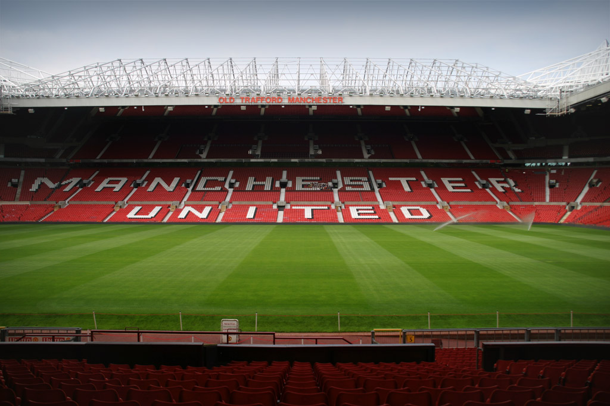
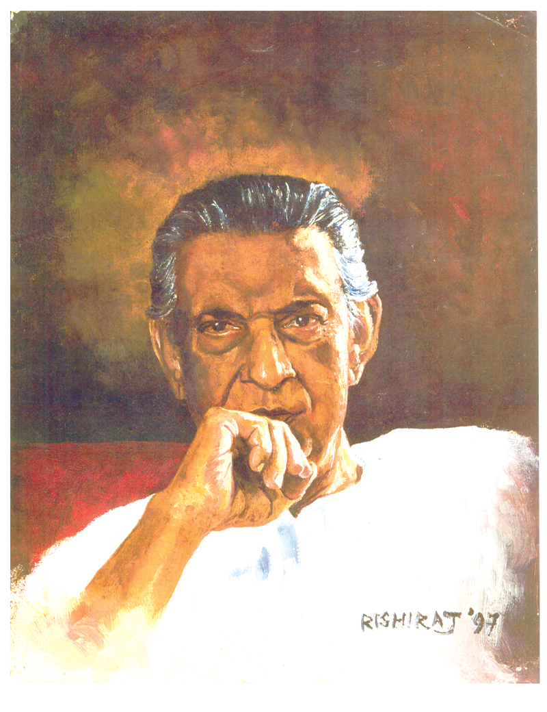
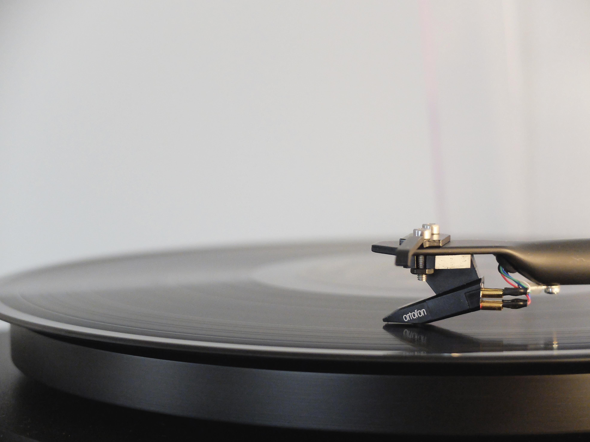
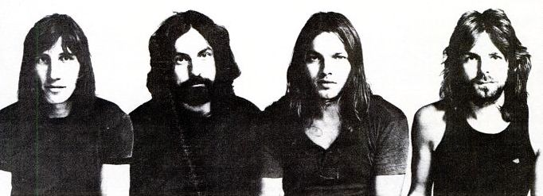
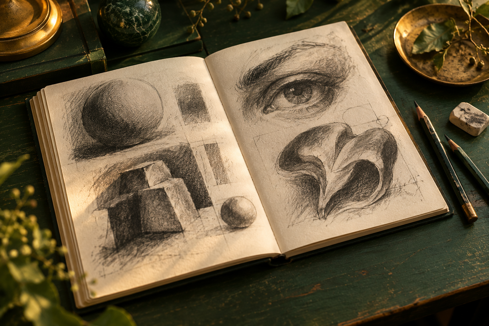

OUTSIDE THE WORK
A few things that
keep me curious.
Football, films, loud guitars, and worlds worth getting lost in.
07 INTERESTS / A PERSONAL COLLECTIONOPEN SOMETHING THAT CATCHES YOUR EYE ↓
OUTSIDE THE WORK
Football, films, loud guitars, and worlds worth getting lost in.

Through every season.
Films that stay with me.
There’s usually something playing.
Turn it up.Pink Floyd · Scorpions · Fossils · Cactus · Led Zeppelin · Guns N’ Roses · Eric Clapton
Another way of seeing.